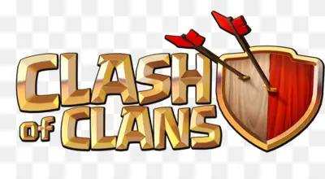
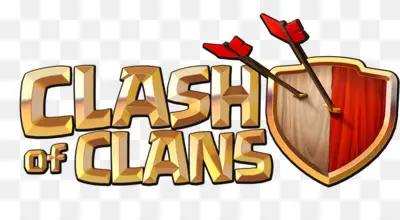

CLASH OF CLANS
Clash of Clans es un videojuego de estrategia y accion desarrollado por Supercell
Clash of Clans es un videojuego de estrategia multijugador en el que el usuario debe construir una aldea (en una cuadrícula de 44x44), donde tendrá que administrar recursos, construir y mejorar una amplia variedad de edificios, entrenar tropas, elaborar hechizos, y atacar a otras aldeas de jugadores en línea o participar en una campaña de un jugador en la que luchará contra aldeas prediseñadas, con la finalidad de obtener tres tipos de recursos: oro, elixir y elixir oscuro; útiles para la expansión de la aldea. Al mismo tiempo, el usuario puede crear o unirse a un clan, donde podrá interactuar con otros jugadores y participar en eventos como las "Guerras de Clanes", los "Juegos del Clan" y las "Ligas de Guerras de clanes".
ESTRUCTURAS
Los edificios hacen que la aldea crezca pero construirlos y mejorarlos requiere oro, elixir o elixir oscuro. Algunos pueden costar gemas, como lo es la choza de constructor. El Ayuntamiento es el principal edificio, y de su mejora dependerá la construcción de los demás edificios, una vez alcanzado el máximo de mejoras de las estructuras del nivel del Ayuntamiento, es necesario aumentar su nivel para así poder mejorar más.
Hay cuatro tipos de estructuras:
- Ejército: Incluye todos los edificios que tienen relación con el ataque (cuarteles, fábricas de hechizos, altares...)
- Recursos: Incluye los edificios que permiten la obtención de recursos. Las chozas del constructor también vienen incluidas.
- Defensas: Estas estructuras permiten realizar daño a los atacantes. Incluye, por ejemplo, cañones, muros y morteros.
- Trampas: Estas estructuras no requieren tiempo para construirse y no son visibles cuando te ataquen en las batallas.

TROPAS
Hay 2 tipos de tropas, dependiendo de que recurso se utilice para entrenarlas:
Tropas de elixir
- Bárbaro
- Arquera
- Gigante
- Duende
- Rompemuros
- Globo bombástico
- Mago
- Curandera
- Dragón
- P.E.K.K.A
- Bebé dragón
- Minero
- Dragón eléctrico
- Yeti
- Montadragones
- Titánide eléctrica
- Druida salvaje

Tropas de elixir oscuro
- Esbirro
- Montapuercos
- Valquiria
- Gólem
- Bruja
- Sabueso de lava
- Lanzarrocas
- Gólem de hielo
- Cazadora de
- héroes
- Centinela
- aprendiz
- Druida
para mas informacion ingresar al siguiente link: